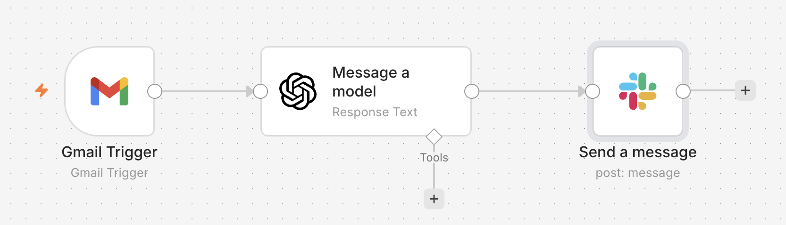
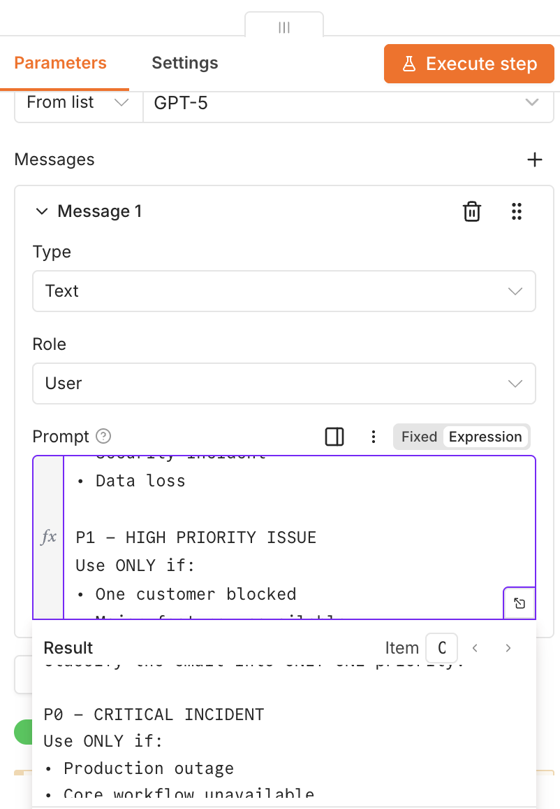
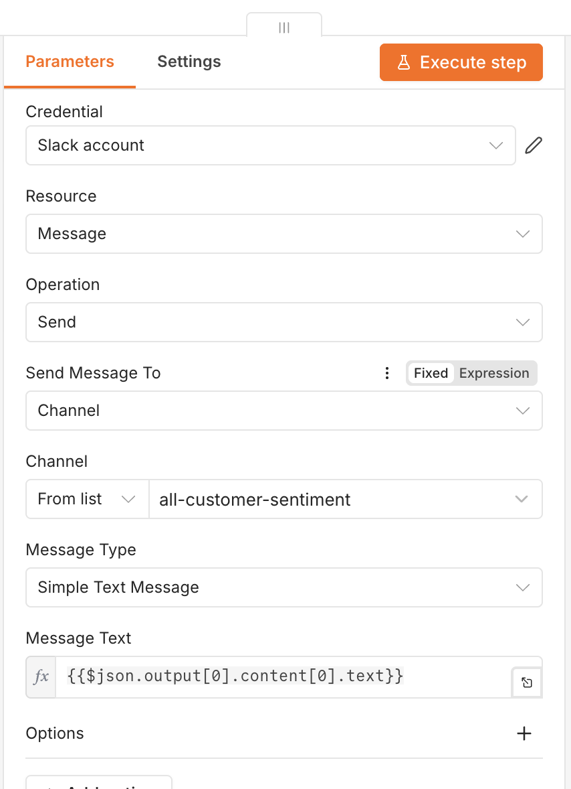
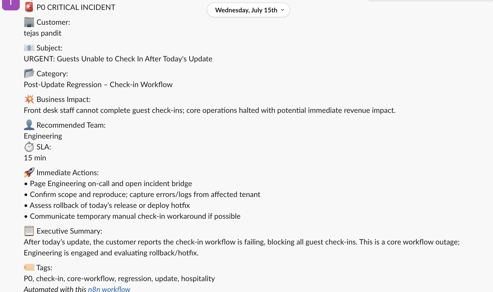

Business Problem
Support teams manually read customer emails, determine severity, identify ownership, assign SLAs, and notify the right teams. This process is slow, inconsistent, and difficult to scale.
Product Vision
Build an AI-first incident intelligence engine that analyzes every incoming customer email, determines business impact, classifies severity (P0–P3), recommends ownership, assigns an SLA, and generates an executive-ready Slack alert before the first human reviews the message.
Solution Architecture
Customer Email
│
▼
Gmail Trigger
│
▼
AI Incident Intelligence Engine
├── Intent Detection
├── Severity Classification
├── Business Impact
├── Team Recommendation
├── SLA Assignment
├── Executive Summary
└── Immediate Actions
│
▼
Slack Operations Channel
Workflow
- Customer sends an email.
- n8n Gmail Trigger detects the message.
- OpenAI evaluates subject and body using operational rules.
- The AI classifies P0–P3 severity.
- The AI recommends ownership and SLA.
- A structured Slack alert is posted for the operations team.
Prompt Engineering Highlights
- Fixed four-level priority model (P0–P3).
- Single owning team to avoid ambiguity.
- Strict SLA mapping.
- Executive summary limited to two sentences.
- Maximum four immediate action items.
- Deterministic Slack formatting.
Technology Stack
| Layer | Technology |
|---|---|
| Workflow | n8n |
| Gmail Trigger | |
| AI Engine | OpenAI GPT |
| Notifications | Slack |
| Prompt Logic | Custom Operational Prompt |
Roadmap
- CRM enrichment
- Renewal risk detection
- Customer health integration
- Jira automation
- Zendesk synchronization
- Executive dashboards
- Incident trend analytics
- AI-generated postmortems
Business Value
- Faster incident recognition
- Consistent prioritization
- Reduced manual triage
- Improved cross-functional collaboration
- Executive-ready operational summaries
Workflow & Product Screenshots
1. Workflow Architecture
The automation begins by monitoring incoming customer emails using Gmail. Each email is passed through the AI Decision Engine, which classifies the incident before publishing a structured operational alert to Slack.

2. AI Decision Engine Prompt
The AI Decision Engine is powered by a structured operational prompt rather than a simple summarization request. The prompt defines incident severity criteria, ownership rules, SLA mapping, business impact assessment, executive summaries, and response formatting to ensure consistent decision-making across all incoming customer emails.

Prompt Design Highlights
- Assigns every incident a single priority (P0–P3).
- Determines business impact based on customer context.
- Recommends the owning team automatically.
- Maps each incident to a predefined SLA.
- Generates executive-ready summaries.
- Produces a Slack-ready incident report.
3. Slack Integration
Once the AI Decision Engine completes its analysis, the structured incident report is automatically delivered to Slack. This ensures engineering, customer support, and leadership teams receive the same standardized incident information in real time, reducing manual coordination and accelerating response.

What the Integration Delivers
- Automatic delivery to the designated operations channel.
- Consistent formatting for every incident.
- No manual copy-and-paste or message formatting.
- Immediate visibility for cross-functional teams.
4. AI-Generated Incident Brief
The final output of the platform is a structured incident brief delivered directly to Slack within seconds of receiving a customer email. Instead of manually reading lengthy conversations, evaluating severity, assigning ownership, and drafting updates, support teams receive an AI-generated operational summary that is immediately actionable.

Incident Intelligence Generated
| Capability | Business Value |
|---|---|
| Severity Classification | Standardizes prioritization using P0–P3 incident levels. |
| Business Impact Assessment | Communicates operational and customer impact clearly. |
| Recommended Ownership | Routes the incident to the most appropriate team. |
| SLA Recommendation | Defines expected response timelines automatically. |
| Immediate Actions | Provides responders with recommended first steps. |
| Executive Summary | Enables leadership to understand the incident in seconds. |
| Incident Tags | Supports reporting, search, analytics, and future automation. |